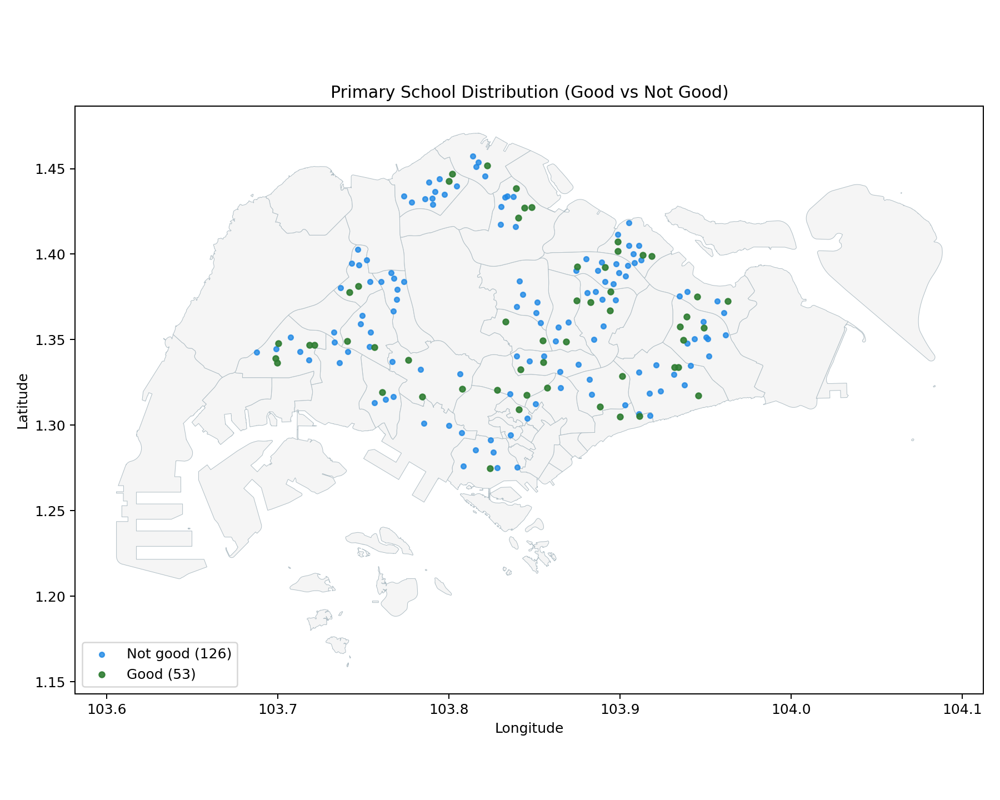

Technical Report: Estimating the HDB Resale Price Effect of Proximity to Oversubscribed Primary Schools
1. Context
MND is responsible for land-use planning and affordable, accessible public housing. HDB resale prices have faced upward pressure from supply-demand conditions and location preferences. One key channel is primary-school proximity: under MOE admission rules, distance bands matter, with households within 1km receiving priority.
This motivates the core question: does proximity to "good" primary schools produce a measurable resale premium after controls?
2. Scope
2.1 Problem
MND needs school-proximity estimates that are comparable across specifications and geographies, so location premiums are not misattributed to schools. Non-technical officers also need natural-language access to model outputs.
2.2 Success Criteria
Success criteria are defined at both business and operational levels.
Success requires interpretable effect sizes, geographic heterogeneity reporting, and reproducible source-to-model pipelines with traceable design choices.
2.3 Assumptions
This report and the current implementation rely on a set of material assumptions.
First, "good school" is operationalized using good_primary_schools.csv (top-59 by overall subscription pressure). This definition is operational and can be changed for sensitivity checks.
Second, to reduce API calls, OneMap routing is used for nearest-distance fields while threshold-count fields use Euclidean approximations. This is an explicit trade-off between realism and runtime/quota constraints.
Finally, causal interpretation remains conditional. The baseline hedonic and local boundary designs reduce confounding but do not fully eliminate sorting effects.
2.4 Stakeholder-to-Method Mapping
Although the report is written for data scientists, the project methods were selected to answer different operational stakeholder questions.
| Stakeholder | Core question | Method artifacts used |
|---|---|---|
| DS analyst (model owner) | Is predictive performance stable out-of-time? | hedonic_model/outputs/metrics.json, feature_importance_top.csv |
| DS reviewer (causal scrutiny) | Are estimated school effects specification-sensitive? | diagnostic_outputs/good_school_sign_trace.csv, rdd_outputs/rdd_results.csv |
| Policy and planning analyst | Are effects heterogeneous by local market? | town_outputs/town_premium_results.csv |
| Data engineering maintainer | Can the pipeline be rerun safely at scale? | build_resale_flat_school_dataset_onemaps.py chunked and append-safe pipeline |
2.5 Data
The pipeline integrates transactional, geospatial, and amenity datasets.
Data governance note: raw source data should be re-pulled from upstream providers (for example Kaggle, data.gov.sg, and scraping pipelines) instead of being treated as permanent versioned assets in the code repository.
| Data source | Role in pipeline | Main path in repo |
|---|---|---|
HDB resale transactions (2017+) |
Target variable and structural covariates | primary_boundaries/inputs/ResaleflatpricesbasedonregistrationdatefromJan2017onwards.csv |
| School subscription rankings | Good-school definition and school-tier labels | good_primary_schools.csv and primary_boundaries/outputs/overall_subscription_rates.csv |
| URA Master Plan land use | Spatial entity assignment for school points | primary_boundaries/inputs/MasterPlan2025LandUseLayer.geojson |
| HDB existing building polygons | Polygon matching and exposure transfer | primary_boundaries/inputs/HDBExistingBuilding.geojson |
| Mall points and MRT exits | Accessibility covariates | primary_boundaries/outputs/shopping_centres_points.geojson and primary_boundaries/outputs/mrt_exits_tagged_with_lines.geojson |
| Engineered OneMap feature table | Final model-ready dataset | primary_boundaries/outputs/onemap/resale_flats_with_school_buffer_counts_onemap.csv |
Current coverage statistics in generated artifacts:
- Total schools in subscription table:
179 - "Good schools" selected:
59 - Shopping centres mapped:
155 - MRT exits tagged:
597 - HDB polygons loaded:
13,386 - Resale address points matched to HDB polygons:
9,568 - Unmatched address points:
28
2.6 Required APIs and External Services
Two external services are used in this project workflow.
The first is the OneMap routing API (https://www.onemap.gov.sg/api/public/routingsvc/route), used for nearest walking distance to malls and MRT stations. The project requires a valid OneMap access token (ONEMAP_API_KEY) in .env. Without this token, the OneMap distance-provider mode fails early by design.
The second is Kaggle dataset access (kagglehub) for enrichment sources used in preprocessing scripts (for example, shopping-centre coordinate seeds and MRT metadata tables). These scripts require local Kaggle authentication setup when rerunning data pulls.
3. Methodology
3.1 Technical Assumptions
The project separates conceptual assumptions (Section 2.3) from technical assumptions that govern implementation.
Spatial layers are normalized to WGS84 for ingestion and projected to SVY21 (EPSG:3414) where meter-based operations are required. This ensures consistent buffering and distance logic.
School boundaries are constructed by joining school points to URA master-plan land-use polygons, with de-duplication rules for repeated URA object IDs. From these cleaned polygons, 1 km and 2 km Euclidean buffers are generated. This comes from the assumption that data is shared across ministries in Singapore, requiring collaboration between URA, MOE and HDB.
For routing features, the OneMap implementation uses candidate pre-filtering by Euclidean radius and nearest-candidate cap (k). The latest optimization keeps OneMap calls for nearest mall and MRT distances while computing 10-minute count features from Euclidean thresholds. Additional deduplication groups repeated origin coordinates to reduce repeated API calls.
Model-side, resale price is modeled as log(resale_price) to stabilize variance and permit approximate percentage interpretation through exp(beta)-1. Time effects are absorbed through month fixed effects and location effects through town fixed effects in OLS specifications.
3.2 Implementation
The implementation evolved across branches in the repository:
| Branch | Role in project |
|---|---|
Data-Preprocessing |
Geospatial integration and feature engineering pipeline |
Hedonic-Model |
Hedonic regression, boundary RDD, and town-level heterogeneous-effect analysis |
Within Data-Preprocessing, the core geospatial workflow is implemented in:
primary_boundaries/join_primary_schools_to_ura_landuse.pyprimary_boundaries/build_resale_flat_school_dataset_onemaps.py
Within Hedonic-Model, model estimation is implemented in:
hedonic_model/train_hedonic_model.pyhedonic_model/run_school_boundary_rdd.pyhedonic_model/run_town_premium_models.py
3.3 End-to-End Project Flow
flowchart TD
A["Sources"] --> B["Preprocess"]
B --> C["Features"]
C --> D["Modeling"]
D --> E["Artifacts"]
E --> F["FastAPI"]
F --> G["LLM Layer"]
G --> H["Policy User"]
E --> I["MkDocs"]
classDef source fill:#e3f2fd,stroke:#1e88e5,color:#0d47a1;
classDef prep fill:#e8f5e9,stroke:#43a047,color:#1b5e20;
classDef model fill:#fff8e1,stroke:#f9a825,color:#e65100;
classDef app fill:#f3e5f5,stroke:#8e24aa,color:#4a148c;
classDef output fill:#fbe9e7,stroke:#f4511e,color:#bf360c;
class A source;
class B,C prep;
class D,E model;
class F,G,H app;
class I output;
3.4 Model Workflow
flowchart TD
A["Feature Data"] --> B["Train/Test"]
B --> C["Ridge"]
B --> D["OLS"]
B --> E["RDD"]
B --> F["Town Premium"]
C --> G["metrics + pipeline"]
D --> H["OLS table"]
E --> I["RDD tables"]
F --> J["Town tables"]
G --> K["API model/predict"]
H --> K
I --> L["API rdd/*"]
J --> M["API town-premiums/*"]
classDef data fill:#e3f2fd,stroke:#1e88e5,color:#0d47a1;
classDef train fill:#e8f5e9,stroke:#43a047,color:#1b5e20;
classDef model fill:#fff8e1,stroke:#f9a825,color:#e65100;
classDef api fill:#f3e5f5,stroke:#8e24aa,color:#4a148c;
class A data;
class B train;
class C,D,E,F,G,H,I,J model;
class K,L,M api;
3.5 Experimental Design
The experimental workflow has two layers: feature engineering and modelling.
At feature-engineering level, the sequence is:
- Build school-boundary entities by joining school points to URA polygons.
- Construct 1 km and 2 km school buffers and classify school tier.
- Match resale address points to HDB polygons.
- For each polygon-linked address, compute school exposure counts (
school_count_*,good_school_count_*) by buffer intersection. - Compute accessibility features (nearest mall and MRT walking distance, and nearby amenity counts).
- Export a transaction-level table with all engineered covariates.
At modelling level (Hedonic-Model branch), three complementary strategies are used:
- Predictive plus interpretable hedonic models: Ridge for predictive stability and OLS for coefficient interpretation.
- Boundary RDD around the good-school 1 km cutoff: local linear specifications with increasing bandwidths and controls.
- Town-specific regressions: separate models for heterogeneous premium estimation by town.
This layered design is deliberate: the hedonic model gives broad association patterns, RDD provides a local validity stress test, and town-level models expose heterogeneity that pooled coefficients can hide.
3.6 Model Selection Rationale (Why OLS + Ridge + RDD)
The modelling stack combines methods with complementary strengths.
Ridge regression is used as the primary predictive model because the feature space includes many correlated engineered covariates and one-hot encoded fixed effects. L2 regularization stabilizes coefficients under multicollinearity and improves out-of-sample generalization.
OLS is retained in parallel for coefficient interpretability. It provides directly readable terms for hypothesis discussion (for example, good_school_within_1km and good_school_count_1km) and supports fixed-effect specifications that are useful for decomposition and diagnostics.
RDD is added as a local identification stress test around the 1 km good-school boundary. It does not replace the pooled hedonic model; instead, it checks whether local discontinuities remain after controls and bandwidth restrictions.
Town-specific models are included because pooled coefficients can mask heterogeneous local effects. In this project, the sign and magnitude of school-associated premiums differ materially across towns.
Method alternatives were considered but not prioritized in this phase:
| Candidate approach | Why not primary in this phase |
|---|---|
| Single pooled OLS only | High interpretability but weaker predictive stability under multicollinearity |
| Tree boosting as core model | Strong predictive power but weaker direct coefficient interpretability for policy-facing effect decomposition |
| Full causal design only (no predictive model) | Better identification focus but loses practical forecasting and residual diagnostics benefits |
| One universal treatment premium | Empirically inconsistent with town-level heterogeneity observed in outputs |
3.7 School Location Distribution Map
To support visual validation of school-location coverage, we provide a static split map (green points = Good schools, blue points = Not good schools):

The map shows 179 school points across the island (53 good, 126 not good in the joined point layer), with denser clusters in major residential belts. This is used as a QC check before downstream buffer and distance feature generation.
4. Findings
4.1 Results
The engineered dataset in active use contains 223,550 resale rows and 27 columns in the OneMap feature table. Key distributional statistics indicate broad exposure variation:
- Share of transactions with at least one good school within 1 km:
54.2% - Mean
good_school_count_1km:0.61 - Mean
school_count_1km:3.63 - Median nearest mall walking distance:
851 m - Median nearest MRT walking distance:
681 m
Representative descriptive plots:
 Transactions are concentrated in a few towns (notably Sengkang and Punggol), so pooled estimates are strongly shaped by these submarkets.
Transactions are concentrated in a few towns (notably Sengkang and Punggol), so pooled estimates are strongly shaped by these submarkets.
 4-room and 5-room flats dominate the sample, so results are most representative of mass-market flat types.
4-room and 5-room flats dominate the sample, so results are most representative of mass-market flat types.
 The distribution is right-skewed with a high-price tail, supporting
The distribution is right-skewed with a high-price tail, supporting log(resale_price) modeling.
 Median prices generally rise with more nearby rail-line options; high-line-count tail bins are small and should be interpreted cautiously.
Median prices generally rise with more nearby rail-line options; high-line-count tail bins are small and should be interpreted cautiously.
From hedonic outputs (hedonic_model/outputs/metrics.json):
| Metric | Value |
|---|---|
| Train R2 (log scale) | 0.909 |
| Test R2 (log scale) | 0.915 |
| Test RMSE (SGD) | 58,568.63 |
| Test MAE (SGD) | 43,845.37 |
OLS premium estimate for good_school_within_1km |
-1.62% |
Model analysis protocol in the hedonic run:
- Temporal train-test split (no random shuffle): last 12 months held out.
- Training rows
200,744(89.8%), test rows22,806(10.2%). - Cross-validation was not used in this baseline; Ridge used fixed
alpha=1.0. - ANOVA-style global variance test from OLS:
F = 7887,Prob(F) = 0.00, so regressors are jointly significant.
Test R2 = 0.915 means about 91.5% of holdout variation in log(resale_price) is explained by the model; this is predictive fit, not causal proof. SMOTE was not used (imblearn not used; task is regression).
Key significant variables from OLS:
floor_area_sqm:+0.00834(p < 1e-40)storey_mid:+0.00742(p < 1e-40)ln_nearest_mrt_walking_distance_m:-0.02557(p < 1e-40)mrt_unique_lines_within_10min_walk:+0.03874(p < 1e-40)good_school_within_1km:-0.0164(p < 1e-20)good_school_count_1km:+0.0088(p < 1e-9)pscorenote: not included as a standalone continuous regressor in this baseline; it is used indirectly via good-school tier/count construction.
At the sample median resale price (about SGD 495k), -1.62% is roughly -SGD 8.0k, while +0.88% per additional good school within 1 km is roughly +SGD 4.4k. This sign inconsistency means policy teams should not rely on a single pooled premium.
From nested specification tracing (good_school_sign_trace.csv):
- Raw-only and partially controlled specs show negative coefficients.
- After adding time and town fixed effects, the sign can attenuate or flip.
- Adding full school-count terms reintroduces negative coefficient on the binary indicator, while marginal count effect remains positive.
Short consolidation table from boundary RDD (hedonic_model/rdd_outputs/rdd_results.csv):
| Specification | Bandwidth (m) | Sample size | Cutoff premium (%) | p-value |
|---|---|---|---|---|
| Uncontrolled | 100 | 32,185 | -1.71 | 0.0289 |
| Controlled | 100 | 32,185 | +0.34 | 0.1216 |
| School fixed effects | 100 | 32,185 | +0.24 | 0.2558 |
RDD specifications differ by control intensity: Uncontrolled uses treatment and running-variable terms only; Controlled adds structural/market covariates; School fixed effects adds school FE so identification is from within-school boundary variation.
Effect size and significance are strongly specification-sensitive, with uncontrolled estimates markedly more negative than controlled variants.
From town-level models (town_premium_results.csv):
- Estimated premium per additional good school within 1 km is heterogeneous:
- strongest positive estimate observed in Geylang (
+7.56%) - strongest negative estimate observed in Serangoon (
-8.02%) - Across 20 town models, 17 are significant at 5%, with both positive and negative signs represented.
Static planning-area sign map (good_school_within_1km; green positive, red negative):

Short read: signs are mixed (10 positive, 15 negative, 3 near-zero), so effects are not uniformly positive. Core areas mapped from CENTRAL AREA are negative in this run. Positive-sign towns show higher average good_school_count_1km (0.84 vs 0.60), but this is associative, not causal.
Coefficient table: docs/assets/data/town_good_school_within_1km_sign_summary.csv.
5. Discussion, Recommendations, and Limitations
5.1 Discussion
Pooled effects are unstable across specifications, so "near a good school always raises prices" is not supported once richer controls are added. Town-level heterogeneity is also strong and mixed in sign, arguing against a single citywide premium.
Local boundary evidence weakens after controls versus uncontrolled comparisons, suggesting part of the raw discontinuity reflects local composition differences. School variables should be interpreted as one component of a broader spatial bundle with accessibility, structural attributes, and time-location effects.
5.2 Recommendations
For the next project phase, we recommend prioritizing four items.
-
Adopt a tiered reporting standard for policy users. Report pooled estimates together with town-specific ranges and uncertainty intervals to prevent over-generalization.
-
Strengthen identification before policy use. Continue RDD work with stricter local comparability checks, alternative bandwidth selectors, and placebo boundaries. If feasible, shift from address-point to finer geolocation.
-
Expand sensitivity analysis for school definitions. Re-estimate with alternate "good school" definitions (different top-N thresholds, phase-specific pressure metrics, and lag structures) and report robustness envelopes.
-
Operationalize reproducibility together with upstream data improvements. Keep the chunked OneMap pipeline and branch-separated architecture, add an explicit runbook with parameter manifests, improve source-system data quality where capture is weak, and prioritize procurement of missing but useful datasets that were not available in time for this phase.
Given current evidence, the safest policy-facing conclusion is that school proximity is associated with resale prices, but the sign and magnitude are context-dependent and model-sensitive. Policy interpretation should therefore use local and specification-aware estimates rather than one universal premium.
5.3 Limitations, Bias Risks, and Mitigations
Key technical limitations remain and should be considered when interpreting the outputs.
- Location granularity: the pipeline uses address-level points rather than exact unit coordinates. This can blur boundary-near treatment assignment and attenuate local effects.
- School quality proxy risk: top-59 oversubscription is one operational definition of "good school" and may embed demand-side perception effects not purely school-intrinsic quality.
- Spatial confounding: school proximity is correlated with neighborhood attributes (transport, mature-town effects, redevelopment intensity). Fixed effects and controls reduce but cannot fully remove all confounding.
- Routing approximation mix: nearest distance uses OneMap routing, while count-threshold features use Euclidean approximations for tractability. This introduces metric asymmetry in accessibility features.
- Sample selection effects: rows without successful geocode and polygon match are dropped (
2,921rows), which can introduce mild selection bias if missingness is systematic.
Current mitigations in the implementation include time and town fixed effects, nested specification tracing, local RDD checks under multiple bandwidths, and explicit chunked rerun logic for reproducibility. Future work should include robustness sweeps on school definitions, placebo-boundary tests, and finer geocoding where feasible.
6. System Architecture
6.1 Overview
The intended architecture has four layers: frontend, FastAPI backend, offline model artifacts, and an LLM query layer. The backend (api branch) handles retrieval, filtering, and inference; artifacts are precomputed offline and loaded at runtime.
6.2 Backend Design
Endpoints are grouped by function to separate observed data from model outputs.
Core model endpoints:
POST /predictGET /model/metricsGET /model/feature-importanceGET /model/coefficientsGET /model/coefficients/{term_name}
Data endpoints:
GET /resales/rawGET /resales/schemaGET /resales/summary
Analytical endpoints:
GET /rdd/resultsGET /rdd/group-ttestsGET /town-premiumsGET /benchmarks/resultsGET /diagnostics/sign-trace
6.3 Model Serving
Models are trained offline and served from serialized artifacts (ridge_pipeline.pkl, metrics.json, ols_coefficients.csv, and RDD/town-premium tables under data/ on the api branch). Prediction requests are validated, defaults are applied for missing fields, features are engineered, and ridge inference is executed.
6.4 LLM Interface
Natural-language queries are mapped to endpoint intents and routed to backend/model outputs.
Flow: User -> LLM/parser -> backend -> model/artifact -> response.
7. Application (LLM App)
7.1 User Interface
Frontend code is not present in this branch.
7.2 Supported Queries
Example query classes:
- Prediction: "Estimate price of a 4-room flat in Tampines" -> POST /predict
- Policy insight: "How much do good schools affect prices?" -> GET /model/coefficients / GET /rdd/results / GET /town-premiums
- Scenario analysis: "Compare flats near and far from good schools" -> GET /resales/summary
7.3 Output Format
Outputs are JSON rendered as predicted price (with default warnings), school-premium signals, and concise explanatory text.
8. Deployment
8.1 Deployment Architecture
Deployment has two layers: MkDocs + GitHub Pages documentation, and FastAPI on the api branch (/resales, /model, /rdd, /town-premiums, /diagnostics, /benchmarks, /predict) using data/ artifacts.
8.2 Containerisation
No Dockerfile/container configuration is present in this branch.
8.3 Running the Application
Backend run instructions:
- Checkout branch
api. - Install dependencies (
uv sync). - Start backend:
uv run uvicorn api.main:app --reload(oruvicorn api.main:app --reload). - Access API docs at
http://127.0.0.1:8000/docs.
8.4 Optional Cloud Deployment
No cloud deployment configuration or public endpoint is documented in this repository.